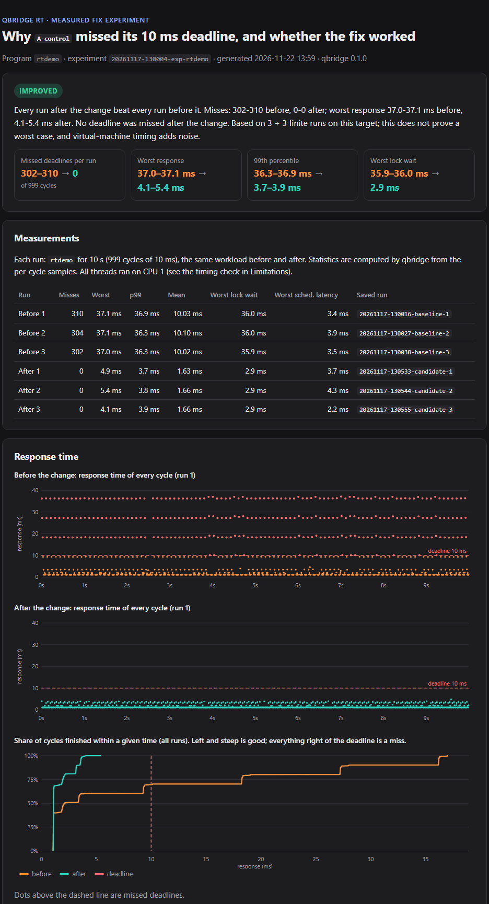
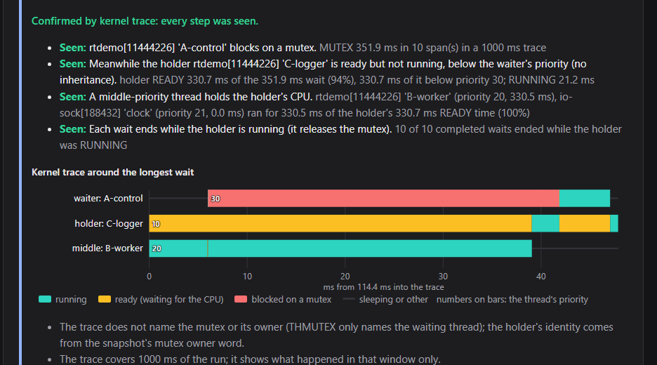

qbridge RT
Debugging tools tell you what happened. qbridge RT lets an AI assistant find out why a real-time task on QNX 8.0 missed its deadline, test a fix, and measure whether it worked, with a person approving every change.
QNX Global Hackathon 2026Developer Tooling & Host ToolsQNX SDP 8.0MIT licence
Detect → Diagnose → confirm with a kernel trace → Propose → a person approves → Test on the target → Measure → Verify
For judges: a 5-minute path
- Watch the demo video (under 3 minutes): link added at submission.
- Open one report below. Each is a self-contained page built only from data recorded on the QNX 8.0 target.
- Check the analysis yourself, no QNX needed: clone the repo and run
qbridge replay. It reruns the diagnosis rules, kernel-trace checks and experiment verdicts on the recorded data and compares them with what qbridge reported on the target (16 of 16 the same). Or connect your own AI assistant toqbridge serve --replayand let it run the whole loop on the recorded data: measure, diagnose, propose, you approve, verdict. - See the QNX code: the README's How it uses QNX table names every QNX-specific file and function.
Four faults, four diagnoses, four measured fixes
All four run on the same demo workload: a control task (priority 30) that must finish every 10 ms, a CPU-heavy worker (20), and a low-priority thread or server (10), all on one CPU of a QNX 8.0 virtual machine. Each fault was diagnosed live, confirmed step by step by a kernel trace, fixed through an approved experiment and measured 3 runs before and 3 after (999 cycles each).
Priority inversion on a mutex
The shared lock is created with PTHREAD_PRIO_NONE, so its low-priority holder is not boosted. Fix: one line, PTHREAD_PRIO_INHERIT.
Misses 310, 304, 302 → 0, 0, 0
Worst response 37.0–37.1 ms → 4.1–5.4 ms
Priority inversion through message passing
A QNX-specific fault: the server's channel is created with _NTO_CHF_FIXED_PRIORITY, so the server does not take its client's priority. Fix: one line, drop the flag.
Misses 825, 819, 812 → 9, 4, 24
Worst response 54.2–96.0 ms → 19.0–28.0 ms. The remaining misses point to the virtual machine slowing the guest; the report says what this does and does not prove.
CPU overload with the wrong priorities
No lock: the control task runs at 15, below the CPU-heavy worker. Fix: a scheduling change with the same binary, -a 30.
Misses 301, 309, 305 → 0, 1, 0
Worst response 36.1–46.2 ms → 5.0–10.6 ms
Priority inversion on a condition variable
The control task waits on a condition variable for a low-priority producer. A condition variable has no owner, so priority inheritance cannot help; the signaller is inferred, so confidence is medium. Fix: the producer above the worker, -p 25.
Misses 599, 600, 601 → 0, 0, 0
Worst response 45.2–47.8 ms → 5.4–8.2 ms
A wrong fix is measured the same way. For the message-passing fault, raising the control task to priority 50 looks plausible but cannot help: the server still answers at its fixed priority 10. Misses went from 798, 802, 801 to 798, 798, 798, and the verdict was inconclusive, with the advice not to rely on the change. Open that report.
What a report shows
The verdict comes first. "Improved" means every run after the change beat every run before it; anything else is "inconclusive".

A finding is called confirmed only if a kernel trace recorded with tracelogger in the same run shows every step of it:

Any recorded trace, no target
qbridge trace --file reads a kernel trace that someone already recorded with tracelogger, from any program, and needs no target and no change to the program. For each thread it shows the time in each state, how long it waited for a CPU, and who ran instead. For every periodic thread it rebuilds each cycle from the trace alone and gives deadline statistics; against rtdemo's own log of every cycle, it found the same misses in three runs (61, 60 and 152 of about 200 cycles each). It flags CPU preemption and possible priority inversion as hints, and says what a trace cannot show: what a blocked thread was waiting for. It can also write the trace for Perfetto, with a track per thread and per CPU.
The message-passing trace, analysed
One second of the whole target while the message-passing fault ran: the control task blocked on its server, the server held off the CPU by the worker.
The same trace in Perfetto
Every thread's states with priorities, which thread ran on each CPU, and a marker at the hint. Perfetto reads the file in your browser.
Why it matters
Control loops in robots, industrial machines and vehicles must finish every cycle on time. When one occasionally misses, the cause is usually outside the task itself: a lock held by a lower-priority thread, a server that answers at the wrong priority, or a CPU-heavy thread above it. Finding which one today means capturing traces by hand, reading them, guessing a fix and hoping it holds.
QNX is the right foundation for this. It gives a deadline task the tools to be on time: fixed-priority preemptive scheduling, priority inheritance on mutexes and through message passing, and a kernel trace detailed enough to confirm a diagnosis. Because QNX services are separate processes that talk by messages, inversion through a server is a real risk in QNX systems, and generic tools do not look for it. qbridge RT turns those mechanisms into a repeatable loop that an AI assistant can drive and a person controls.
How it is built
| Part | What it does |
|---|---|
| qbridged (QNX C) | A resource manager serving live thread state, mutex holders read from process memory, process-death events and per-task deadline statistics as files under /dev/qbridge. Started at boot from the target image. |
| qbridge_task.h | A real-time task registers once with a devctl and reports every cycle with MsgSendPulse, so it never blocks on the monitor. |
| Diagnosis rules | Deterministic rules for mutex inversion, message-passing inversion, condition-variable inversion and CPU preemption, plus own work overrun and late wake-up when no other thread explains the misses, each with evidence, a confidence level and what it could not determine. |
| Trace check | Records one second with tracelogger, decodes it on the host, and checks every step of a finding against the thread state changes. |
| Native .kev decoder | Reads the raw .kev file tracelogger writes, on any computer, without the QNX SDP. Checked against QNX's traceprinter on 1,236,591 real events with no mismatch (validation). |
| Recorded traces | Analyses any recorded trace on the host, with no target: per-thread states and waits, deadlines rebuilt from the trace, and, with kernel calls in the trace, who each blocked thread waited for (mutex holder, server, signaller) with the events that show it, classified as confirmed inversion, probable interference, no inversion or insufficient evidence. An HTML page and a Perfetto export with an arrow from each waiter to its holder. |
| Experiment loop | Proposes one exact change, waits for a person's typed approval tied to the diff's hash, rebuilds with qcc, redeploys, reruns, compares and rolls back. |
| MCP server and CLI | The same tools for an AI assistant (any MCP client) and for a terminal. Read-only by default; every call is in a hash-chained audit log. |
Codelab
Write a QNX resource manager that serves live data as files: a step-by-step tutorial for QNX 8.0 with its own small example program, every command run and checked on a target.
Try it
git clone https://github.com/vychopade/qbridge.git cd qbridge python -m venv .venv .venv\Scripts\activate (Linux/macOS: source .venv/bin/activate) pip install -e . qbridge replay qbridge trace --file examples/traces/msgpass.txt.gz --perfetto qbridge trace --file tests/fixtures/kev/msgpass_fault.kev.gz --process rtdemo
Building and running on a QNX 8.0 target (QNX SDP 8.0, qcc with gcc 12.2, an x86_64 image made with mkqnximage) is described in the README.